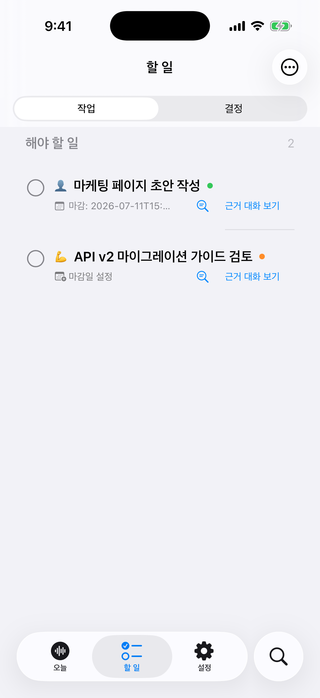
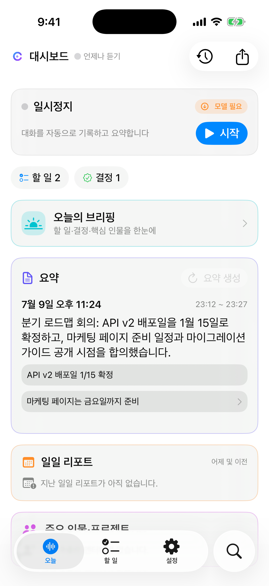
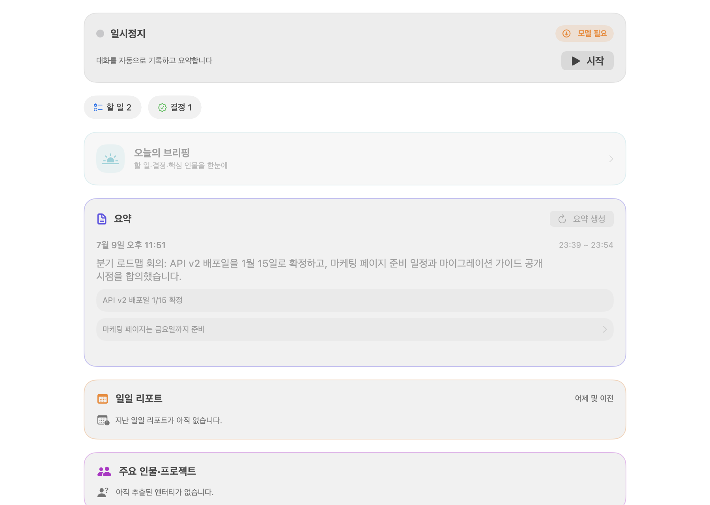

온디바이스 · 기본값이 프라이버시
회의록은
회의록은
이제 그만.
Calex는 대화를 듣고, 요약·결정·할 일로 자동 정리합니다 — 별도 조작 없이, 전부 당신의 기기 안에서.
iPhone · iPad · Mac · 한국어 & 영어 · 계정 없이 바로 사용



Calex는 대화를 듣고, 요약·결정·할 일로 자동 정리합니다 — 별도 조작 없이, 전부 당신의 기기 안에서.


필기도, 별도 조작도 없습니다. 켜두고 대화에만 집중하세요.
투데이 화면의 토글 하나로 시작 — 원하는 시간대에만 듣도록 스케줄도 설정할 수 있어요.
회의, 통화, 일상 대화. Calex가 기기 안에서 실시간으로 전사합니다.
대화가 끝나고 몇 분 안에 요약·결정·할 일이 나타나 바로 실행할 수 있어요.
캡처한 대화가 요약·할 일·결정으로 정리됩니다. 실제 앱 화면입니다.
메뉴 막대에 머물다가, 필요할 때 창을 열어 요약·할 일·결정을 넓은 화면에서 확인하세요.

필요할 때 주변 대화를 캡처 — 앱이나 위젯에서 켜고 끕니다.
긴 전사가 핵심·결정·후속 조치가 담긴 간결한 브리프로 정리됩니다.
기억할 만한 하이라이트·결정·할 일을 하루 끝에 깔끔하게 되짚어 줍니다.
실행 항목과 결정을 자동 추출하고, 각각 원본 대화로 연결합니다.
전사와 AI가 기기에서 동작합니다. 계정도 분석도 없이 — 데이터가 기기를 떠나지 않습니다.
홈 화면·잠금 화면·Mac에서 녹음 상태와 최근 요약을 바로 확인하세요.
기본적으로 오디오·전사·요약이 iPhone·iPad·Mac을 떠나지 않습니다. Calex 계정도, 서버도, 추적도 없습니다. 선택적 클라우드 엔진은 당신의 키로 직접 켤 때만 동작합니다.